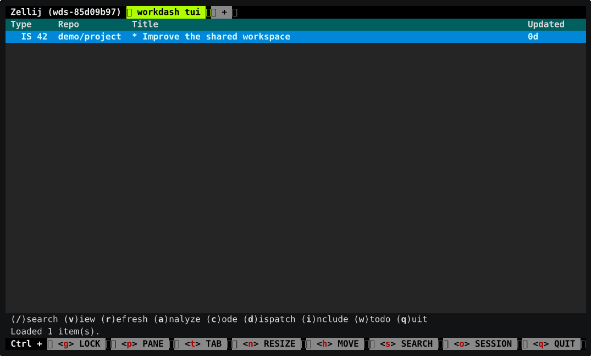
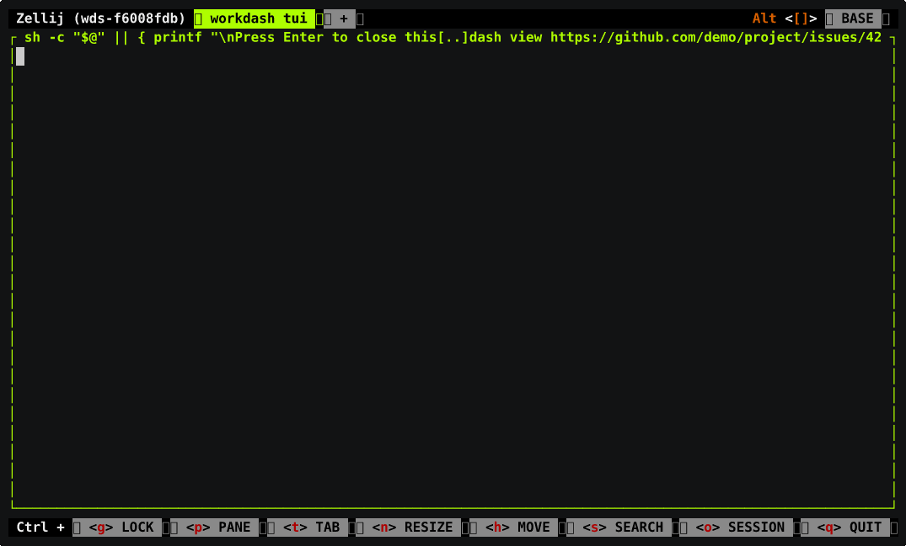
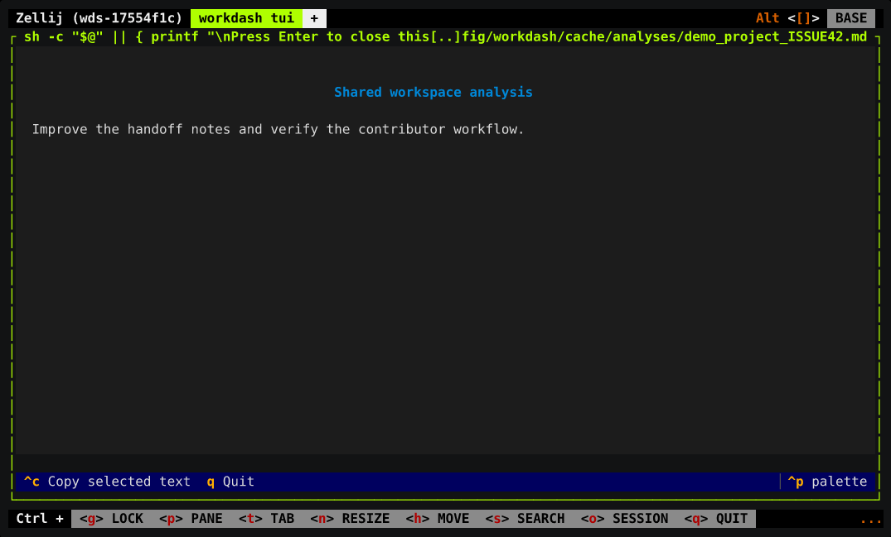
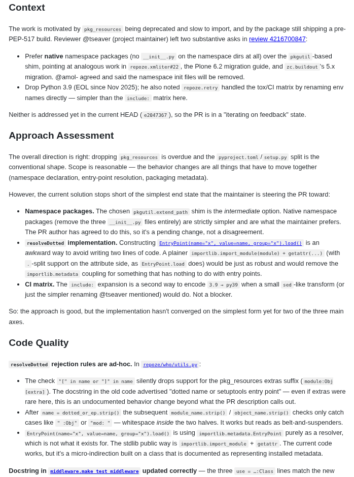
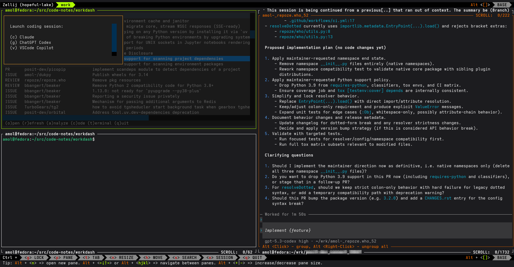

Run commands in the right checkout
Press c, then t to open the task’s shell without launching an agent. The same keys return to that shell so you can pick up the test or command you left there.
Work your way
Pick a task, decide what it needs, and work on it yourself or alongside an agent. You share the same Git checkout and can take over whenever you want.
Start with your work ↓See your issues, pull requests, review requests, and todos across repositories. Recently updated work rises to the top, and * marks a suggested next task.

On your PRs, the first symbol reports CI and the second reports review.
For example, ✓✓ PR means checks pass and the PR is approved. A bold cyan title marks an issue with sub-issues.
Filter by type, number, repository, or title. Press / again to clear the filter.
Paste a GitHub issue or PR URL to add it to your dashboard.

Read the issue, follow the discussion, and see what needs to change without leaving the terminal.
Press v twice to open the task in the built-in viewer. Follow a linked issue or document and press b to return. To open the task on GitHub, press v, then o.
Ask for another reading of the issue before you touch the code. Press a to choose an agent or reopen a saved analysis.



Start your agent with the task already in hand. While it works, inspect the changes, run a test, or edit the same files yourself.


Press c and choose an agent to open a dedicated Git worktree for the task. Choose the agent again to return to its running pane, not start another one.
Rather work solo? Open the task’s terminal. If you use VS Code with Copilot, press e to open the checkout there instead.
See a simulated Claude session ↗
Review the result together →Keep your place
Press c, then t to open the task’s shell without launching an agent. The same keys return to that shell so you can pick up the test or command you left there.
Press w to capture a todo while you’re focused on something else. It returns to your dashboard as a GitHub issue. Add detail with workdash todo TEXT --body "…".
Leave the dashboard running when you detach and your agent can keep working. Run workdash in another terminal to reattach to the same Zellij session.
Forgot what you opened a shell for? Run workdash branchinfo from the checkout to see the branch’s pull request and linked issues. Here’s an example with passing checks and an approved PR:
PR: Describe the shared workspace https://github.com/demo/project/pull/53 ✓✓
ISSUE: Improve the shared workspace https://github.com/demo/project/issues/42